Discovery
- Hears about BioScent on social
- Visits the website
Curious
Interested but skeptical
OpportunityClear value proposition
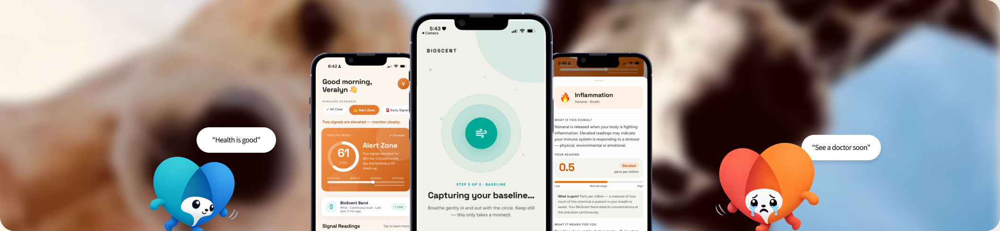
Globally, about 1 in 5 people are expected to develop cancer in their lifetime.
Yet many cancers begin changing the body long before symptoms become visible.
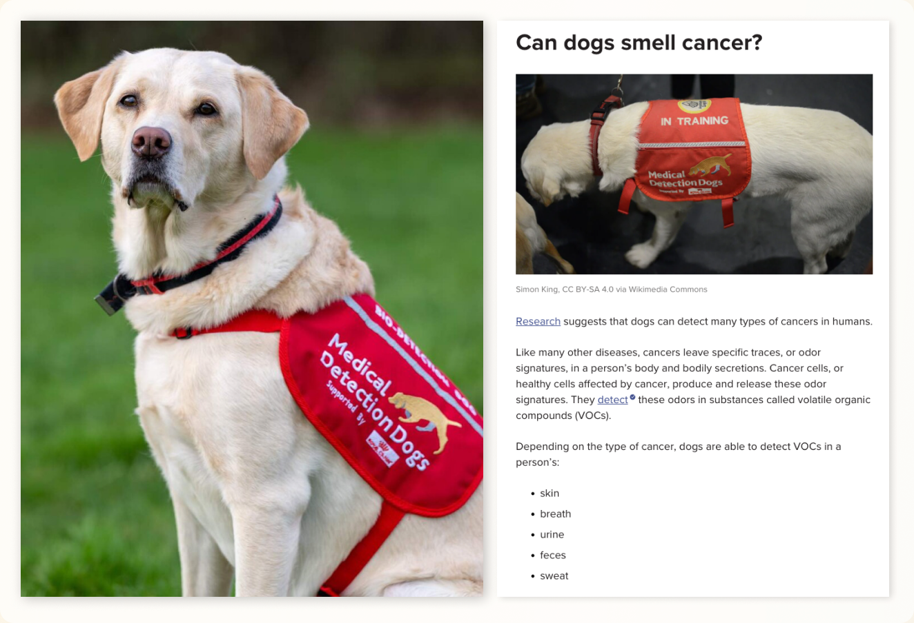
Research into canine scent detection revealed that dogs are capable of identifying cancers through VOCs emitted by the human body. If dogs can sense invisible biological changes, could we transfer that ability into technology? This became the starting point for exploring VOCs and air-based health detection systems.
We didn’t treat these as facts — we turned each assumption into a research question, which led us into the science
People don’t act on slight symptoms if it doesn’t affect their lives significantly.
Certain illnesses doesn’t display visible early stage signs.
They might be too busy hence doesn’t feel the need for minor health checks.
We started with the assumption that the body may communicate early warning signs before symptoms become obvious. But rather than treating this as a fact, we used it as a research question: can biological changes be detected through signals the body naturally emits?
We analysed about 20+ papers on the following topics:
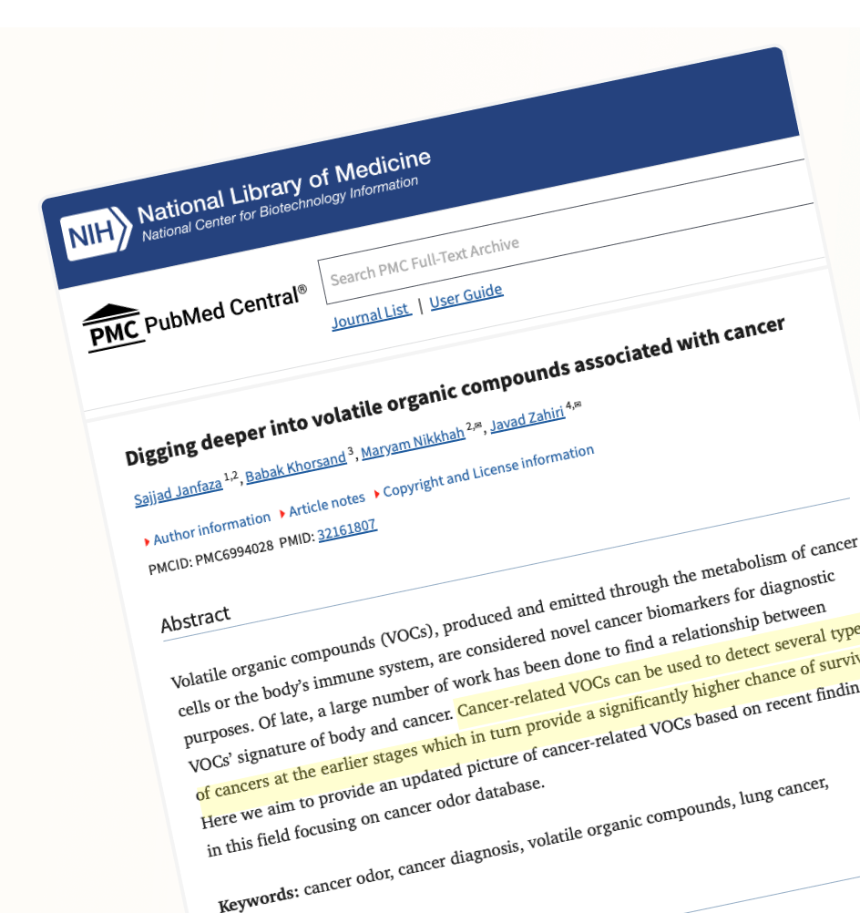
Insights
VOC changes can occur before visible symptoms
Breath contains detectable biomarkers
Existing detection methods are inaccessible
Pattern recognition matters more than single molecules
| Technology | Purpose | Limitation |
|---|---|---|
| Electronic Nose (eNose) | Uses sensor arrays to recognize VOC patterns in breath | Detects pattern rather than identifying exact molecules |
| GC-MS (Gas Chromatography-Mass Spectrometry) | Seperates and identifies VOC compounds in breath samples | Expensive and lab-dependent |
| Breath Biopsy Platforms | Collect and analyze exhaled breath biomarkers | Still emerging clinically |
| Nano Sensor Arrays | Nanomaterials detect chemical changes in breath | Requires further clinical validation |
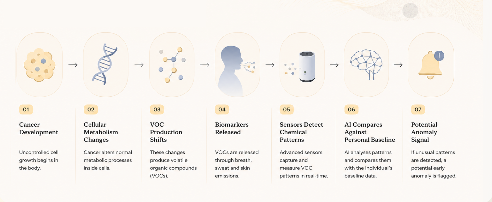
Key Research Insights
Cancer may alter human body’s VOC profile
Air-based detection already exists, but it’s lab-dependent
Personal baseline tracking could make detection more meaningful
Early detection is the real opportunity
Make invisible health signals visible
Turn VOC shifts from breath, sweat and skin into simple, understandable health patterns.
Personalise detection through baseline tracking
Help users understand unusual changes based on their own normal VOC profile, not generic averages.
Design early alerts that inform, not alarm
Communicate uncertainty responsibly through calm, non-diagnostic alerts and guided next steps.
To understand where BioScent could create value, we mapped the broader healthcare ecosystem. This helped us identify the stakeholders involved in detecting, interpreting, and acting upon health signals.
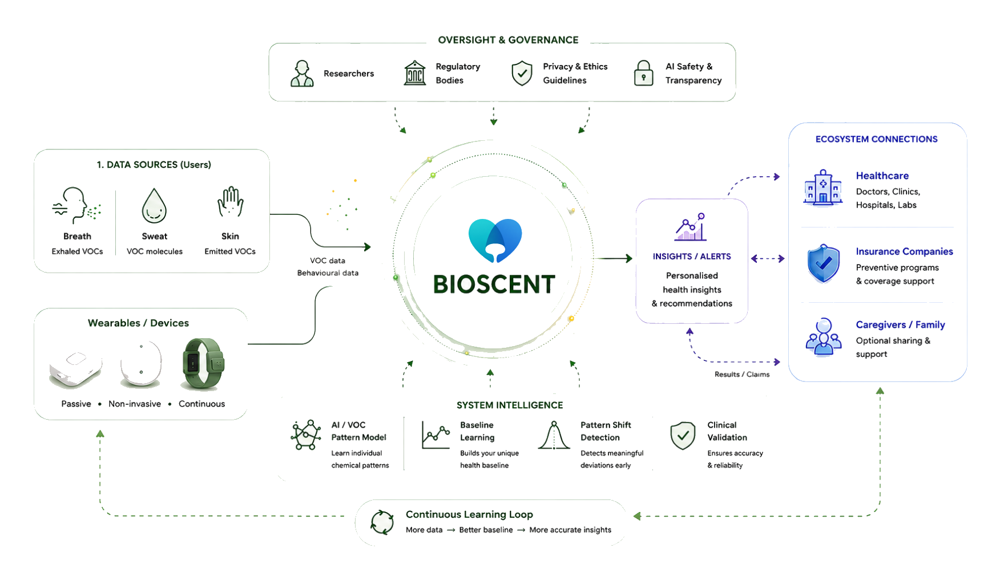
Primary user — busy professionals seeking earlier awareness of health changes through low-effort, non-invasive monitoring.
The journey
Emotional arc
Key opportunities
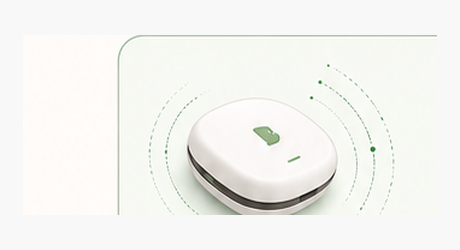
BioScent continuously and passively senses VOCs in your everyday environment without disruption.
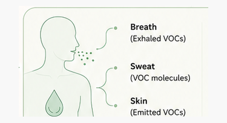
Captures VOCs from breath, sweat, and skin to build a rich set of biological signals.
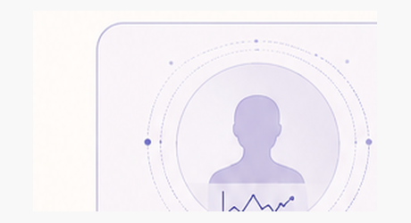
AI learns what is normal for each individual by understanding long-term patterns and context.
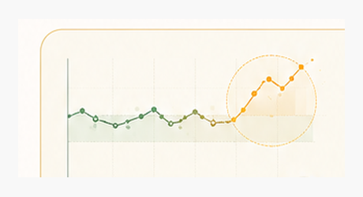
Detects unusual changes or deviations from your personal baseline over time.
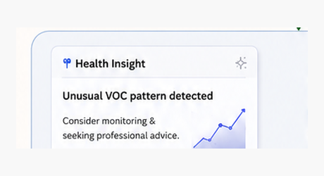
Complex data is translated into clear, actionable insights tailored to your unique health profile.
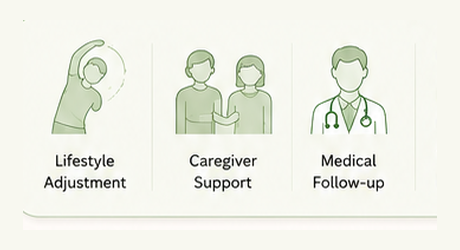
Empowers you and your support network to take informed action — from daily adjustments to professional care.
Simple onboarding process
Guiding users through their first baseline capture without overwhelming them with technical detail.
Direct health index recognition
An immediate overview of their current health signal status. Clear health index states allows users to quickly understand whether they require further attention.
Plain language Science
Explains the science behind each signal in simple terms, helping users understand what changed without feeling overwhelmed
Personalised baseline over generic health scores
Measures 7 days health changes against the user’s personal baseline to highlight meaningful shifts over time.
Accuracy and false positives
The system would need clinical validation before being used for health decision-making.
Health anxiety
Alerts must be carefully designed to inform users without creating panic
Data privacy
Breath and body signal data would require strong consent, transparency and user control
Designing for health means designing for trust
What I learned
Health insights need to be designed with emotional safety, not just accuracy.
What was challenging
Translating complex VOC science into plain language without oversimplifying or making medical claims
My next steps
Test the prototype with users and healthcare professionals to validate trust, privacy and alert sensitivity


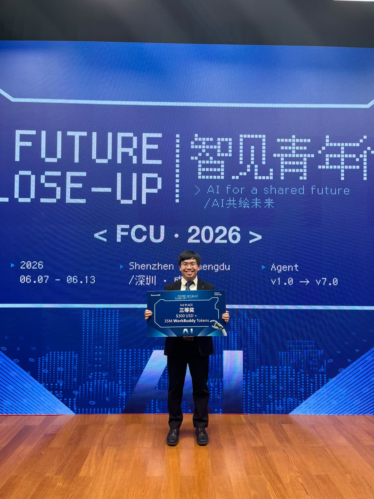